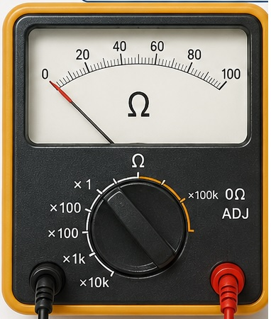
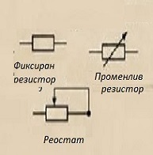

<!DOCTYPE html>
<html lang="bg">
<head>
    <meta charset="UTF-8">
    <meta name="viewport" content="width=device-width, initial-scale=1.0">
    <title>Закон на Ом. Електрично съпротивление</title>
    <style>
        * {
            margin: 0;
            padding: 0;
            box-sizing: border-box;
        }

        body {
            font-family: 'Georgia', serif;
            line-height: 1.6;
            background: linear-gradient(135deg, #f5f7fa 0%, #c3cfe2 100%);
            min-height: 100vh;
        }

        .container {
            display: grid;
            grid-template-columns: 200px 1fr 200px;
            min-height: 100vh;
            max-width: 1400px;
            margin: 0 auto;
            gap: 20px;
            padding: 20px;
        }

        /* Анимиращо заглавие */
        .main-title {
            text-align: center;
            color: #2c3e50;
            font-size: 2.2em;
            margin-bottom: 30px;
            text-shadow: 2px 2px 4px rgba(0,0,0,0.1);
            animation: titlePulse 3s ease-in-out infinite;
        }

        @keyframes titlePulse {
            0%, 100% { transform: scale(1); color: #2c3e50; }
            50% { transform: scale(1.05); color: #3498db; }
        }

        /* Лява страна с градиент */
        .left-sidebar {
            background: linear-gradient(180deg, #bdc3c7 0%, #2c3e50 50%, #bdc3c7 100%);
            border-radius: 15px;
            padding: 20px;
            box-shadow: 0 8px 32px rgba(0,0,0,0.1);
            position: relative;
            overflow: hidden;
        }

        .left-sidebar::before {
            content: '';
            position: absolute;
            top: 0;
            left: 0;
            right: 0;
            bottom: 0;
            background: url('data:image/svg+xml,<svg xmlns="http://www.w3.org/2000/svg" viewBox="0 0 100 100"><circle cx="20" cy="20" r="2" fill="rgba(255,255,255,0.3)"><animate attributeName="cy" values="20;80;20" dur="3s" repeatCount="indefinite"/></circle><circle cx="50" cy="50" r="3" fill="rgba(255,255,255,0.4)"><animate attributeName="cx" values="50;80;50" dur="4s" repeatCount="indefinite"/></circle><circle cx="80" cy="70" r="2" fill="rgba(255,255,255,0.2)"><animate attributeName="cy" values="70;30;70" dur="2.5s" repeatCount="indefinite"/></circle></svg>') repeat;
            animation: floatingParticles 10s linear infinite;
        }

        @keyframes floatingParticles {
            0% { transform: translateY(0); }
            100% { transform: translateY(-100px); }
        }

        .theory-box {
            background: rgba(255,255,255,0.9);
            border-radius: 10px;
            padding: 15px;
            margin-bottom: 20px;
            border: 2px solid #3498db;
            box-shadow: 0 4px 8px rgba(0,0,0,0.1);
            position: relative;
            z-index: 1;
        }

        .theory-box h3 {
            color: #2c3e50;
            margin-bottom: 10px;
            font-size: 1.1em;
        }

        .theory-box p {
            font-size: 0.9em;
            color: #34495e;
            margin-bottom: 10px;
        }

        .formulas {
            background: #ecf0f1;
            padding: 15px;
            border-radius: 8px;
            font-family: 'Courier New', monospace;
            border-left: 4px solid #e74c3c;
        }

        .formula {
            font-size: 1.2em;
            color: #c0392b;
            font-weight: bold;
            margin: 5px 0;
        }

        .animated-instrument {
            width: 100%;
            height: 120px;
            background: linear-gradient(45deg, #3498db, #2980b9);
            border-radius: 10px;
            margin: 15px 0;
            display: flex;
            align-items: center;
            justify-content: center;
            position: relative;
            overflow: hidden;
        }

        .animated-instrument::before {
            content: '⚡';
            font-size: 3em;
            color: #f1c40f;
            animation: electricPulse 2s ease-in-out infinite;
        }

        @keyframes electricPulse {
            0%, 100% { transform: scale(1) rotate(0deg); opacity: 0.7; }
            50% { transform: scale(1.2) rotate(180deg); opacity: 1; }
        }

        /* Централна част */
        .main-content {
            background: rgba(255,255,255,0.95);
            border-radius: 15px;
            padding: 30px;
            box-shadow: 0 8px 32px rgba(0,0,0,0.1);
        }

        .navigation {
            text-align: center;
            margin-bottom: 20px;
            padding: 15px;
            background: linear-gradient(90deg, #3498db, #2980b9);
            border-radius: 10px;
        }

        .navigation a {
            color: white;
            text-decoration: none;
            margin: 0 10px;
            padding: 8px 15px;
            border-radius: 5px;
            transition: all 0.3s ease;
        }

        .navigation a:hover {
            background: rgba(255,255,255,0.2);
            transform: translateY(-2px);
        }

        .test-section h1 {
            color: #e74c3c;
            margin-bottom: 25px;
            font-size: 2em;
        }

        .question {
            background: #f8f9fa;
            margin: 20px 0;
            padding: 15px;
            border-radius: 8px;
            border-left: 4px solid #3498db;
            transition: all 0.3s ease;
        }

        .question:hover {
            box-shadow: 0 4px 12px rgba(0,0,0,0.1);
            transform: translateX(5px);
        }

        .question-text {
            font-weight: bold;
            color: #2c3e50;
            margin-bottom: 10px;
        }

        .answer-options {
            margin-left: 20px;
        }

        .answer-options div {
            margin: 5px 0;
            color: #34495e;
        }

        /* Дясна страна с градиент */
        .right-sidebar {
            background: linear-gradient(180deg, #ecf0f1 0%, #34495e 50%, #ecf0f1 100%);
            border-radius: 15px;
            padding: 20px;
            box-shadow: 0 8px 32px rgba(0,0,0,0.1);
            position: relative;
            overflow: hidden;
        }

        .right-sidebar::after {
            content: '';
            position: absolute;
            top: 20px;
            right: 20px;
            width: 40px;
            height: 40px;
            background: radial-gradient(circle, #f1c40f 30%, transparent 70%);
            border-radius: 50%;
            animation: orbitalMove 8s linear infinite;
        }

        @keyframes orbitalMove {
            0% { transform: rotate(0deg) translateX(60px) rotate(0deg); }
            100% { transform: rotate(360deg) translateX(60px) rotate(-360deg); }
        }

        .info-box {
            background: rgba(255,255,255,0.9);
            border-radius: 10px;
            padding: 15px;
            margin-bottom: 20px;
            box-shadow: 0 4px 8px rgba(0,0,0,0.1);
            position: relative;
            z-index: 1;
        }

        .info-box h4 {
            color: #8e44ad;
            margin-bottom: 10px;
        }

        .info-box p {
            font-size: 0.9em;
            color: #2c3e50;
        }

        .instrument-display {
            width: 100%;
            height: 100px;
            background: linear-gradient(135deg, #9b59b6, #8e44ad);
            border-radius: 10px;
            margin: 15px 0;
            display: flex;
            align-items: center;
            justify-content: center;
            position: relative;
        }

        .instrument-display::before {
            content: 'Ω';
            font-size: 2.5em;
            color: white;
            font-weight: bold;
            animation: resistanceRotate 4s linear infinite;
        }

        @keyframes resistanceRotate {
            0% { transform: rotateY(0deg); }
            100% { transform: rotateY(360deg); }
        }

        .bottom-nav {
            text-align: center;
            margin-top: 30px;
            padding: 15px;
            background: linear-gradient(90deg, #95a5a6, #7f8c8d);
            border-radius: 10px;
        }

        .bottom-nav a {
            color: white;
            text-decoration: none;
            margin: 0 8px;
            padding: 8px 12px;
            border-radius: 5px;
            transition: all 0.3s ease;
        }

        .bottom-nav a:hover {
            background: rgba(255,255,255,0.2);
            transform: scale(1.05);
        }

        /* Респонсив дизайн */
        @media (max-width: 768px) {
            .container {
                grid-template-columns: 1fr;
                gap: 15px;
                padding: 15px;
            }
            
            .main-title {
                font-size: 1.8em;
            }
        }
    </style>
</head>
<body>
    <div class="container">
        <!-- Лява странична лента -->
        <aside class="left-sidebar">
            <div class="theory-box">
                <h3>От какво зависи токът?</h3><p>.</p>
                <p>Ако се създаде верига с лампа, амперметър, волтметър и последователно се поставят сухи елементи от 1,5V, 3V и 4,5V ще се види, че токът е различен.
 Колкото пъти нараства напрежението, толкова пъти нараства и токът.</p>
            </div>

            <div class="theory-box">
                <p><strong>Георг Ом</strong> след многократни опити обобщава: 
Токът през един проводник е правопропорционален на напрежението между краищата на проводника и обратнопропорционален на съпротивлението му.</p>
            </div>

            <div class="formulas">
                <h3>Формули:</h3>
                <div class="formula">I = U / R</div>
                <div class="formula">R =ρ.l/S</div>
                <div style="font-size: 0.9em; margin-top: 10px;">
      R - съпро-<br/>тивление  (Ω ) <br/>           
 l - дължина на проводника (m)<br/>
                    S - напречно сечение (mm <sup>2</sup>) <br/>
                    ρ - специфично електрично съпротивление<br/>(Ω . mm <sup>2</sup>) / m)
                </div>
            </div>

                    
                    <p>Омметър</p>
            <div class="animated-instrument"></div>
            <p style="text-align: center; color: white; font-weight: bold;">
Специфично електрично съпротивление<br/>  - озн.  ρ<br/> 
Използва се мерната единица<br/>  - (Ω . mm <sup>2</sup>) / m<br/> 
сребро - 0,016<br/> 
мед - 0,017 <br/> 
алуминий - 0,029
волфрам - 0,055 <br/> 
манганин - 0,43<br/> 
нихром  - 1,1<br/> 
константан - 0,5<br/> 
кантал - 1,45<br/> 

 <div class="sidebar-item">
        </aside>

        <!-- Основно съдържание -->
        <main class="main-content">
            <h1 class="main-title">Закон на Ом. Електрично съпротивление</h1>
            
            <div class="navigation">
                <a href="zad12.html" onclick="alert('Електричен ток')">Електричен ток</a>
                <a href="zad53.html" onclick="alert('Речник')">Речник</a>
                <a href="Upr1.html" onclick="alert('Начало')">Начало</a>
            </div>

            <div class="test-section">
                <h1>Тест №9</h1>

                <div class="question">
                    <div class="question-text">Зад.1. От какво НЕ зависи съпротивлението на един проводник?</div>
                    <div class="answer-options">
                        <div>а) от вида на веществото</div>
                        <div>б) от големината на тока</div>
                        <div>в) от напречното му сечение</div>
                        <div>г) от дължината му</div>
                    </div>
                </div>

                <div class="question">
                    <div class="question-text">Зад.2. Коя е мерната единица за съпротивление?</div>
                    <div class="answer-options">
                        <div>а) V</div>
                        <div>б) A</div>
                        <div>в) V/A</div>
                        <div>г) A/V</div>
                    </div>
                </div>

                <div class="question">
                    <div class="question-text">Зад.3. Когато увeличим два пъти напрежението между краищата на един консуматор, то:</div>
                    <div class="answer-options">
                        <div>а) токът намалява два пъти</div>
                        <div>б) токът нараства 4 пъти</div>
                        <div>в) токът нараства 2 пъти</div>
                        <div>г) токът намалява 4 пъти</div>
                    </div>
                </div>

                <div class="question">
                    <div class="question-text">Зад.4. Късо съединение възниква, ако:</div>
                    <div class="answer-options">
                        <div>а) увеличим напрежението</div>
                        <div>б) увеличим тока</div>
                        <div>в) включим няколко уреда</div>
                        <div>г) при нарушаване изолацията на проводниците</div>
                    </div>
                </div>

                <div class="question">
                    <div class="question-text">Зад.5. Колко е съпротивлението на жичка, поставена при напрежение 9 V, която консумира ток 200mА?</div>
                </div>

                <div class="question">
                    <div class="question-text">Зад.6. През резистор със съпротивление 2 кΩ тече ток 20 mА. Колко е напрежението на резистора?</div>
                </div>

                <div class="question">
                    <div class="question-text">Зад.7. Кое от посочените равенства НЕ е вярно?</div>
                    <div class="answer-options">
                        <div>а) 25mА = 0,025А</div>
                        <div>б) 400С = 0,4кС</div>
                        <div>в) 2Аh = 200А</div>
                        <div>г) 40 кА = 40 000А</div>
                    </div>
                </div>

                <div class="question">
                    <div class="question-text">Зад.8. Определете съпротивлението на проводник с дължина 8 km и напречно сечение 2 mm², ако е изработен от:</div>
                    <div class="answer-options">
                        <div>а) мед</div>
                        <div>б) волфрам</div>
                        <div>в) константан</div>
                        <div>г) кантал</div><br/> 
<a href="zad63.html" onclick="alert('Справочник')" style="color: #3498db; text-decoration: none;">Справочник</a><br/> 
                    </div>
                </div>
            </div>

            <div class="bottom-nav">
                <a href="zad3.html" onclick="alert('Начална страница')">Начална страница</a>
                <a href="zad16.html" onclick="alert('Предишен урок')">Предишен урок</a>
                <a href="zad49.html" onclick="alert('Упътване')">Упътване</a>
                <a href="zad66.html" onclick="alert('Ключ')">Ключ</a>
                <a href="zad18.html" onclick="alert('Следващ урок')">Следващ урок</a>
            </div>
        </main>

        <!-- Дясна странична лента -->
        <aside class="right-sidebar">
            <div class="info-box">
                <h4>Мерната единица за съпротивление</h4><p>.</p>
                <p>Носи неговото име - ом (озн. Ω), а уредът за измерване на съпротивление - омметър.</p>
            </div>

            <div class="instrument-display"></div>
 <div class="sidebar-item">
                    <p>.</p>
                    <a href="zad33.html" onclick="alert(')" style="color: #3498db; text-decoration: none;">Георг Ом</a> 
           
            <div class="info-box">
                <h4>Защо най-често изгарят електрическите лампи при включване?</h4><p>.</p><p>.</p>
                <p>Съпротивлението на проводниците (волфрамовата нишка) е по-малко при ниска температура, а при висока температура е много по-голямо. При включване лампата се нагрява до 2 500°C.</p>
            </div>

<p>Резистори</p><a href="zad53.html" onclick="alert('Речник')">Речник</a>
  <p>.</p>
  
            <div class="info-box" style="text-align: center;">
               
               
            </div>
        </aside>
    </div>
</body>
</html>